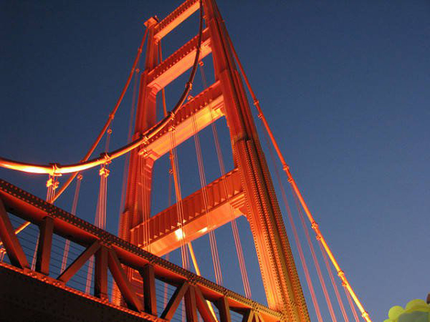

Thời tiết ở San Francisco có thể thay đổi nhanh chóng trong cùng một ngày. Vì vậy, du khách nên xem trước thời tiết và chọn ngày thích hợp để đi tham quan cầu Cổng Vàng. Ngoài ra, nếu bạn muốn tránh đông đúc và chờ đợi lâu tại cầu, nên đến vào buổi sáng hoặc ngày trong tuần thay vì cuối tuần.
Đi bộ qua cầu Cổng Vàng là một hoạt động thú vị và đặc biệt. Du khách có thể chiêm ngưỡng toàn cảnh vịnh San Francisco và thành phố từ trên cao. Tuy nhiên, bạn nên chuẩn bị giày đúng quy cách, mang theo đầy đủ nước uống và kem chống nắng. Đồng thời, nên xem trước thời gian đi để tránh giao thông và đón bình minh hoặc hoàng hôn, bắt trọn khung cảnh đẹp nhất.
Khi đến San Francisco, du khách nên dành thời gian để khám phá các địa điểm xung quanh cầu Cổng Vàng như công viên Presidio, đảo Alcatraz, khu phố Fisherman's Wharf hay bãi biển Baker. Những điểm đến này đều có vẻ đẹp độc đáo và mang tính lịch sử, đồng thời đem lại nhiều trải nghiệm thú vị và làm trọn vẹn hơn chuyến đi của bạn.
San Francisco có các phương tiện giao thông công cộng phát triển và tiện lợi như xe bus, tàu điện ngầm, tàu điện ngầm trên cao và tàu điện trên đường sắt. Bằng cách sử dụng các phương tiện này, bạn có thể di chuyển đến các địa điểm du lịch khác nhau một cách dễ dàng và tiết kiệm chi phí.